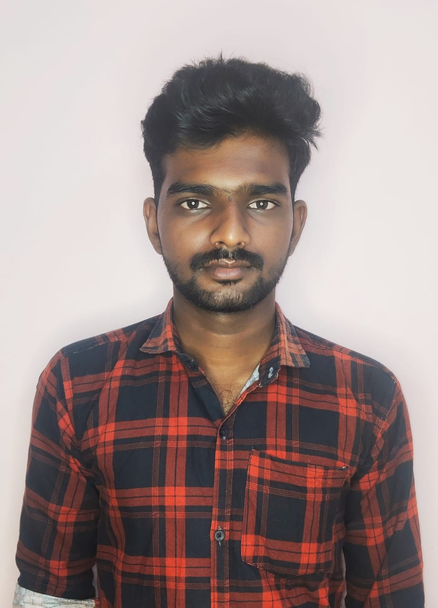

Frontend Developer | Building modern & responsive websites
I’m Stephen Raj, a dedicated entrepreneur passionate about building practical solutions and business opportunities. I focus on delivering value through honesty, hard work, and smart strategies. With a vision to grow step by step, I aim to create sustainable business ventures while keeping client satisfaction and trust at the heart of everything I do.